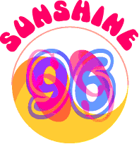

| 
History takes a wicked twist when you plunge into SUNSHINE '69.
You are about to enter the Web's first interactive novel, authored by Bobby Rabyd and published by Sonicnet in 1996.
Come in, spend some time in virtual '69, and before flying back to the 21st Century add your own chapter to the online oral history. Now, fasten your seatbelts and...
|